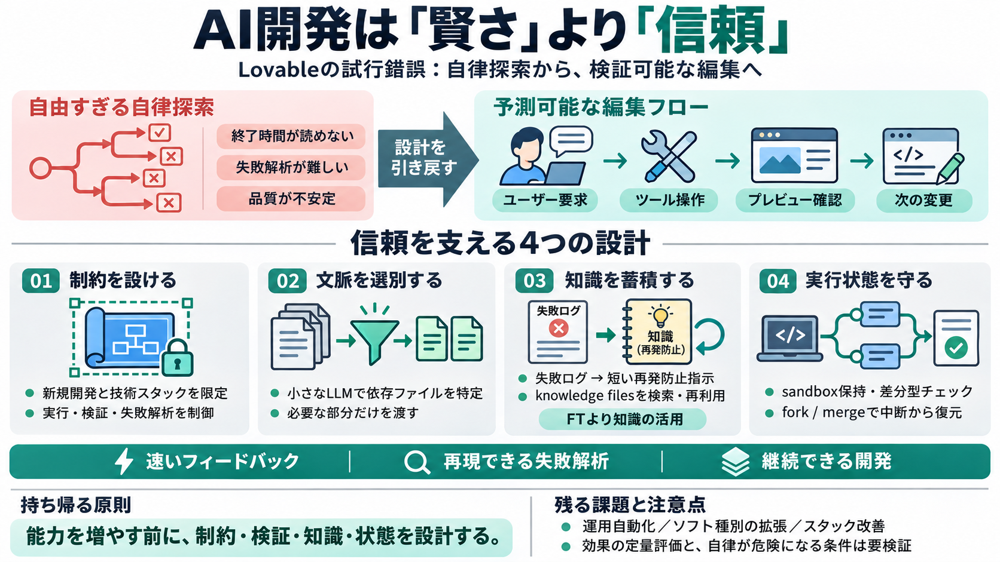

歐洲增速最快AI企業！營收自0飆升至1.2億 Lovable只花3個月
鉅亨網 # 歐洲增速最快AI企業！營收自0飆升至1.2億 Lovable只花3個月 鉅亨網新聞中心 更新時間 瑞典新創公司 Lovable 近日以其驚人的商業成長引起廣泛關注。 由 Anton Osika 和 Fabian Hed…

鉅亨網 # 歐洲增速最快AI企業！營收自0飆升至1.2億 Lovable只花3個月 鉅亨網新聞中心 更新時間 瑞典新創公司 Lovable 近日以其驚人的商業成長引起廣泛關注。 由 Anton Osika 和 Fabian Hed…
Lovable, formerly known as GPT Engineer, is a startup building an AI-powered platform that enables users to create full-…
Lovable was founded in 2023 by Anton Osika (CEO) and Fabian Hedin (CTO) to “empower the 99% who can’t code” by building …
The platform originally launched as GPT Engineer in 2023, rebranded to Lovable in late 2024, and has since grown into on…
mobility-as-a-service Public GPT-Engineer-App/mobility-as-a-service's past year of commit activity JavaScript 0…